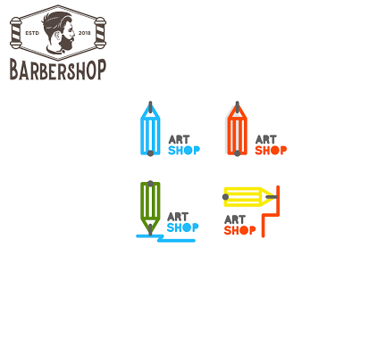

| MESS
RJB Mess is regarded as one of the best mess present in the campus in terms of quality of food as well as variety in mess menu which is updated weekly by Mess Secretary and Mess Council . Special sweets or dishes are provided regularly along with coupon facility for butter, eggs and dahi. Mess is provided with a clean healthy environment and large space to avoid any disturbance in the meal. The Bhawan Mess is well equipped with music system for students to be cheerful while eating. For students, who are unable to reach mess due to health problems, mess facility is provided to them by direct delivery to their rooms or hospital.
|

| SPORTS FACILITIES
There are three cemented badminton courts with floodlights for the students to play during night time. There is a volleyball court in front of bhawan canteen to enjoy team game. Big lawns present in each block are easily converted to cricket and soccer playgrounds. Apart from outdoor games there are facilities of indoor games like table tennis, carrom and chess. Bhawan council of RJB encourages the students in sporting activities by organising various events like Rajendra Premiere League which saw participation of students in large numbers in the past.
|

| GYMNASIUM
Rajendra Bhawan has initiated the GYM facility in hostel the year 2013. GYM is fully equipped with all gadgets essential for basic body workout.
|

| INTERNET FACILITIES
Rajendra Bhawan is fully equipped with internet facility in form of LAN.Students can do unlimited browsing and downloading. They can also play games like Counter Strike, NFS Most Wanted etc.The best part of internet are the intranet facilities which can be accessed from anywhere within the campus and students can download lectures and tutorials, get regular notices, read e-books from channel-I ( http://192.168.121.7), the intranet website of IIT Roorkee.Even the subject registrations are done online. Everybody is encouraged to exhibit their creations on channel-I through kriti.
|

| CANTEEN
RJB canteen is the place where one can fulfill his appetite according to his wish. It caters to a variety of food items, which include Maggie, poha, coffee, milk, cold-drinks etc, along with packaged food stuffs and beverages, against cash payments. Besides the food, canteen is also a popular hangout place for the Bhawan inmates. The timings of the canteen best suits the schedule of students. It is open from 11 in morning to 2 at midnight.
During the exams when most of the students avoid going out of the campus to save their so called precious time, canteen remains as their favourite destination for refreshments.
Prices of the canteen food-stuff are fixed by chief warden, so that the RJBians could enjoy every bite at nominal price. The canteen is privatized and the contracts are awarded on tender basis.
|
|
| LIBRARY
Rajendra Bhawan owns an 6 hrs running library to provide a number of technical, literature academics book for sake of students located at the floor above Canteen. Apart from that it also facilitates several interesting and competitive magazines, newspapers and research material. The orderly arranged items and other facilities makes the environment better for readers. Except magazines, newspapers and some competitive books, all the technical and literature books can be issued for 3 days.
In case any book after being issued, is not returned back within three days, that student will be charged Rs.5/- fine per day.
Only stamped study material and notebooks are allowed, do not bring your laptops or bags inside library.
Students are supposed to be disciplined and to create academic environment in the library hall.
|

| GARDEN
Rajendra Bhawan has excellent gardens to rejuvenate one's mind after a long and tiring day. At Excellent Gardens, we believe that a well-designed garden is a necessity for any hostel or home and should offer a tranquil, relaxing atmosphere where one can get away from the hustle and bustle of everyday life.
|
|
| TV ROOM
After encountering lectures,tutorials, practicals and meetings for maximum part of a day, the mind craves for some relaxation and entertainment.Those who wish to play outdoor games run towards the fields. Some run towards the lappies and some go out on a voyage with a Pendrive to collect the new movies and the games for the sake of increasing their collection. There is also a bunch who utilize their time by taking short naps in installment. For the rest, the only place they can love is RJB TV Room. With the ultimate HDTV and Tata sky DTH connectivity its the noisiest place on matchdays. The symbolic howling of the students easily convey the fours and sixes to whole Bhawan. The TV Room also has ambient facilities for some indoor games like table tennis, carrom, and chess. There are 3 table tennis tables. Anyone willing to play TT should bring his own TT bat as its not provided by the institute. TV Room opens at 6 pm and closes at 12 midnight but it can be opened anytime by submitting ID cards which can be taken back after returning the key. There is 1 TV Room attendant to look after it.
|

| VISITOR'S ROOM
The bhawan a visitor room where residents can meet with friends and relatives.
|
| 
| UTILITIES
The bhawan houses a barber shop which is open through out the day till late in the evening.
The bhawan also has an in-house stationary shop to cater to the urgent needs of the students.
The fruit and juice shop serves refreshing juices and platters of fruits at nominal prices.
|